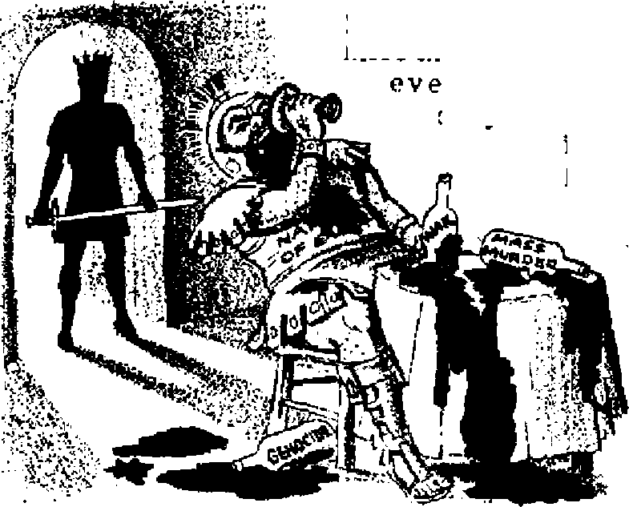
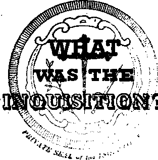
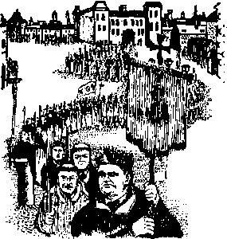
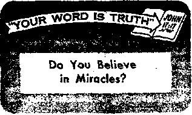

JUNE 8, 1956 SEMIMONTHLY
THE MISSION OF THIS JOURNAL
News sources that are able to keep you awake to the vital issues of our times must be unfettered by censorship and selfish interests. “Awake!" has no fetters. It recognizes facts, fates facts, Is free to publish facts. It is not bound by pohtictd ambition/ or obligations; it is unhampered by advertisers whose toes must not' be trodden on; it is unprejudiced by traditional creeds. This journal keeps itself free that It may speak freely to you. But it does not abuse its freedom. It maintains integrity to truth.
"Awake I" uses the regular news channels, but is not dependent on them. Its own correspondents are on all continents, in scares of nations. From the four corners of the earth their uncensored, on-the-scenes reports come to you through these columns. This journal’s viewpoint is not narrow, but is international It is read in many nations, in many languages, by persons of all ages. Through its pages many fields of knowledge pass in review—government, commerce, religion, history, geography, science, social conditions, natural wonders—why, its coverage is as broad as the earth and as high as the heavens.
“Awake I” pledges itself to righteous principles, to exposing hidden foes and subtle dangers, to championing freedom for all, to comforting mourners and strengthening those disheartened by the failures of a delinquent world, reflecting sure hope for the establishment of a righteous New World.
Get acquainted with “Awake!” Keep awake by reading “Awakel”
Pc bushed Semimonthly Bi WATCHTOWER BIBLE AND TRACT SOCIETY, INC. II? Adams Street Brooklyn 1, N. Y,, U. S. A.
N. H. Knobr, President Grant Suiter, Secretary
Printing this issue: 1,750,000
Otksr lasoufu is which “Awake!” 1i iibllihed: Srtlmontkly—Arrfkaauy, Finnish. French, German. Holludlab, Iulian, Normalan, Spanish, Bwedlrii. Monthly—Danish. Greek, Japanese, Portuguese, Ukrainian.
Offices Pearly mtacrlptloo rate
America, U.S., li t Adams St., Brooklyn 1, N.Y. SI Airtrail*, 11 Beresford Rd., Strathflcld, N.S.W. 8/-Canada, 150 Bridgeland Are., Park Bead P.O.,
Toronto 10, Ontario fl
Enilani, 34 Craven Terrace. London, W. S ?/• Hew Zealand, O.P O. Bor 30, Wellington. C. 1 17-Suth Africa, Private Bag. Handstonteln, Tvl. 1/-
Flve cents a copy
Remittances should be sent to office in pour country tn cnmplUnee with regulations to guarantee eate delivery nt money. Bemlttances are accepted ar. Brooklyn Prem countries where no office is located, by international money order only. Subscription rates In different countries are here stated in local currency. NotlM of expiration (trllb renewal blank) is sent st least two Issuer before subscription expires. Chaope of addrsu when sent to nur office may be expected effecthe within one month, Seed your old es well as new address.
Bnlered ar sr-twod-dSsy mattnr at Brooklyn, N.T. Printed in U.S.A.
CONTENTS
Bad Associations and Useful Habits
Bloodguiltiness Dooms This World
Problems of Unity and Living Standard 10
Reappraisal of the Missing Link
Notes and Quotes on Delinquency
A Toothpaste Containing Fluoride
“Your Word Is Truth"
Jehovah’s Witnesses Preach in All
Vorjrtn# KXXVU
Brooklyn, N. Y.. June-8, 19W
11
BftOTAssoavr\TiONS
^JlRDS of a feather, according to an old saying, flock together. Even more appropriate to our discussion here is the statement that all the animals in one pack share the same bunch of fleas. The first saying implies that you associate with the kind of person that you yourself are. The second warns that you are under pressure to adopt the customs of the people you know. Both warn us that we should choose our friends well. The Bible agrees, saying:
‘Bad associations spoil useful habits/1 —1 Corinthians 15:33, New World Trants Most people recognize this principle. Mothers recognize it. when they express concern about their children’s playmates. Parents recognize it when they are anxious a bout the friends with which their teen-age daughters associate. Youths demonstrate it when, to keep from being called a coward, they do things they never would do otherwise. Adults submit to similar social pressure when they go into debt to keep up with their neighbors, or join a particular dnurch because of its size and respectability rather than because of its doctrines.
We ah know that we are influenced by the ideas, morals and behavior of our friends, but few people realize just how strong this influence is. Recent experiments have uncovered amazing facts about it
The experiments involved 123 groups of college students who were given what they were told were tests in visual perception. They merely had to state which of three lines on one card was of the same length as a single line on another card. Anyone could do this. In fact, under normal circumstances they would pick the right line more than £19 out of every 100 times.
But this test was not conducted under normal conditions. Actually it was a test of social pressure, rather than of visual perception, and all but one person in each group of participants had been told to give unanimously wrong answers at certain specific times. The real purpose of the test was to find out what people would do when they could plainly see that one thyig was true but everyone else said just the opposite.
What do you think happened? Would people believe their eyes? Would the crowd’s pressure affect them? Well, three out of four persons tested began making errors! They accepted the majority’s
June a, 195*;
wrong judgments 36.8 percent of the time. Even when the difference in the length of the lines was increased to seven inches, the point was never reached where every person experimented upon would reject the majority’s deliberate error every time!
Another thing of importance was discovered. It was found that when just one other person also went against the major-'ity and gave truthful answers, the accuracy jumped amazingly. When the person who was the subject of the experiment had only one other person in agreement with him, there were only a fourth as many errors as when everyone else had given the wrong answer. Solomon E. Asch, reporting on the experiments in the November Scientific American, said: “As long as the subject had anyone on his side, he was almost invariably independent, but as soon as he found himself alone, the tendency to conform to the majority rose abruptly.”
Commenting on Professor Asch’s disturbing report, Scientific American said it indicates “that to have the courage of one’s convictions is a rather rare quality. In the face of apparent group pressure many people will disbelieve their own senses.” Yet it illustrates several vital principles.
First, as mentioned above, it shows that we must Choose our friends well. If we are going to be influenced by them anyway, certainly they should not be people who would tempt us into immorality, or into . rejecting God’s way and accepting the way of the world. The Bible is very clear on this when it says: “Do not become unevenly yoked with unbelievers. For what partnership do righteousness and lawlessness have? Or what fellowship does light have with darkness?” Certainly these experiments prove this principle to be sound! —2 Corinthians 6:14, New World Trans.
Second, these experiments illustrate why it is so necessary to stick firmly with those who will help us to stand for truth and right. If just one associate can give such strength to stand for truth against a majority that is wrong, we can understand why we are told to stick firmly with the true congregation, “not forsaking the gathering of ourselves together” “but encouraging one another,” “comforting one another and building one another up.” —Hebrews 10:25; 1 Thessalonians 5:11, New World Trans.
Third, the importance of determination is clearly illustrated. Remember that one out of every four persons subjected to this experiment did stand firm. Twenty-five percent did not submit to the pressure to agree with the erroneous judgments of the majority. How can you have an equal spiritual determination? First, by being firmly grounded in the faith, and then after that by benefiting from the strength of right association, and by heeding the warning to beware of wrong examples.
But still another principle is involved. It is that we must set the right example for others. We must recognize our obligation to them, and let our example provide them with the strength, encouragement and assistance that we want them to provide for us. The Proverbs say: “Iron sharpeneth iron; so a man sharpeneth the countenance of his friend.” Each is a help, benefit and encouragement to the other. The Bible also says: “Woe to him that is alone when he falleth; for he hath not another to help him up.” Is your good example providing that needed help for others? —Proverbs 27:17, Ecclesiastes 4:10.
So it is wise to select friends whose influence will be sound, whose example will help you toward useful habits. And, more than that, be a good friend, not passing along a bad example to others, but being a help rather than a hindrance to them in their efforts to go the right way.
Hott? Wh e n a n d h aw?
How can you escape
the blood that has drenched tbe earth?
ft on on your part will preserve you.
A MURDER was being committed in the A United States at the rate of “one killing every 40.3 minutes/’ and New York city alone was claiming "a victim every twenty-four hours/* according to the Federal Bureau of Investigation records for the first six months of 1953-
But this is an infinitesimal amount of warm blood spilled when compared with the manslaughter caused by careless driving of automobiles or by other accidental causes. The butchery committed by automobiles on United States’ highways has tapped the loss of lives in all wars fought in America; and when it comes to injuries, motor accidents outstrip the bloodiest war.
The Revolutionary War lasted eight
years and cost 4,435 American lives. Auto-
mobiles last
more than that
days.
The War of 1812 lasted three years, with 2,260 UJS. deaths; the Mexican War cost 13,283 American Jives. But deaths in both those wars were equaled on United States* roads in just five months of 1955. From 1775 to 1955 some 1,130,393 American lives were lost in all wars that the United States was involved in. But between 1900 and 1955 cvcr 1,149,414 Americans died as a result of highway accidents. All this is a terrible spilling of blood thdt man must give an account for before the Supreme Judge of the universe, who is the Giver of life, namely, Jehovah God.—The U.S. News <£ World Report, February 3, 1956.
Eut this frightful toll of blood is a drop compared with tliat which has soaked the earth in her thousands of wars, besides religious inquisitions and crusades prior to 1914. However, since 1914 more human blood has been poured out than ever before in history, not only in private, individual killings and accidental killings, but more so in collective killings, in the two greatest carnages of all human experience, World Wars 1 and II. And now mass preparation is made for the dreaded third world war, which promises to be the greatest spiller of blood, the most costly of all in human fives, because the world H now armed with atomic or nuclear weapons of mass destruction.
While both sides to the wild sprees of human butchery try to wash their hands clean of bloodguilt in the water of various self-excusing arguments, yet God is judge. Before him an all-embracing bloodguilt rests on all mankind, on both those who directly did the shedding of blood and those who lent their support morally or materially. The God of justice lays upon people a joint responsibility in respect to bloodshed. So all people share in a community of responsibility for the blood that has drenched the earth.
In this respect the skirts of religion are not clean, for in these massacres the religious leaders of all the nations at war, even the clergy of Christendom, have prayed to their religious gods for heaven’s blessing upon their own military forces. On April 1, 1939, Eugene Pacelli, the pope of the Roman Catholic Church, telegraphed General Franco and thanked him for a “desired Catholic victory,” in which 1,200,000 men, women and children were slaughtered; most of these victims were Catholics.
When Adolf Hitler made his triumphal entry into Austria, in March, 1938, after his absorption of Austria, Cardinal Innit-zer was among the first to visit him and pay him honor. Not only did Cardinal Innitzer “Heil Hitler” in his own handwriting, and write Cardinal Bertram of Breslau that the Austrian hierarchy would continue to co-operate with Hitler, but he caused the swastika flag to be raised on the Vienna cathedral.
What followed is well known. This same Adolf Hitler, whom the cardinal blessed, led the world into the most sanguinary conflict ever known. He supervised the butchering of over 5,000,000 Jews in scores of concentration camps, over which his S.S. troops reigned supreme. He condemned Jehovah’s witnesses to death because of .their faith in God and the uncompromising stand they took in their worship. Upward of ten thousand of them were thrown into his concentration camps, many of them died in gas chambers, others were beheaded, some were shot and othex's hanged. Only 8,000 survived. Hence to modern-day Christendom the prophetic words addressed to unfaithful Jerusalem apply: “Also in thy skirts is found the blood of the souls of the innocent poor.” —Jeremiah 2:34, Am. Stan, Ver.
Russian Blood Purges
Closely at the heels of Hitler’s sickening bloodthirstiness and bloodguiltiness follows the Russian communistic regime, which receives the blessing of the Russian Orthodox Church and its clergy. Authentic reports state that during the farm collectivization program in Russia 10,000,000 peasants were either massacred or starved or deported to slave labor camps to die. Stalin’s blood purges of 1936 to 1938 shocked the civilized world.
Vladimir Petrov, former top agent of the Soviet in Australia, told of the drastic purges throughout Europe and Asia by the Russian government. “As an N.K.V.D. [later name of secret police] officer in Moscow in 1936, 1937 and 1938,” he says, “I lived through the most fantastic reign of terror imposed by a modem government on its people, and a bloodbath almost too fearful to be believed. I estimate that two million Soviet citizens must have been shot without any proper trial or examination of the stereotyped charges against them in the nightmare years of 1936, ’37 and ’38. This hideous carnage was sheer madness by any standard of right and justice . . . The purges were a calculated policy which seemed to make sense on the basis that expediency is the only law.”
Petrov further says: “I handled hundreds of signals to all parts of the Soviet Union in the following form:—‘to N.K.V.D. Frunz, Khirgiz Republic: “You are charged
with the task of exterminating 10,000 enemies of the people. Report results-by signal.”—Yezhov.’- ” The reply would be: “I reply to yours of--The. following
enemies of the Soviet people have been shot.” Petrov tells how they worked “day sind night trying to keep up with the mass liquidations” and to meet their set quotas. “The quotas of victims for each district and town were fixed at N.K.V.D. headquarters in Moscow. I remember one order to the town of Sverdlovsk for 15,000 ‘enemies of the people’ to be exterminated." Executions were carried out by shooting or the victims were simply thrown into old mine shafts as the quickest method, and left to die.
lii the Katyn forest of Poland 15,400 Polish army officers and intellectual leaders were found murdered. This while that part of Poland was under Russian occupation in 1940. Speaking not of Stalin, but of Khrushchev, Malenkov, Mikoyan and Bulganin, present heads of the Russian government, the New York Times of February 20, 1956, had this to say: “The men who denounce Stalin now were trained by him and their hands are as bloody as were Stalin’s with the blood of innocent millions.”
It is under this present regime that thousands upon thousands of Jehovah’s witnesses now languish in prisons. Many of them have been murdered for refusal to give up their faith in Jehovah God. The lifeblood of those who were slain because of their faithfulness in testifying to the name and goodness of the Almighty God cries out to him. “Listen! Your brother’s blood is crying out to me from the ground,” God says. Referring to slaughter like this the inspired account says: “I saw underneath the altar the souls of those slaughtered because of the word of God and because of the witness work which they used to have. And they cried with a loud voice, saying: ‘Until when.Sovereign Lord holy and true, are you refraining from judging and avenging our blood upon those who dwell on the earth?’ ” The answer to those cries is soon to come when all the nations guilty of such things will have the lifeblood stamped out of them at Armageddon, the war of the great day of God Almighty.—Genesis 4:10; Revelation 6:9, 10, New World Trans.
Bloodguiltiness of the Western World
But bloodguilt does not rest upon the Russians alone. All nations stand guilty before God. The author of the book The UN Record states: “The keynote of Yalta was expressed in a single word by Roosevelt, who said he had seen the devastation wrought by the Germans in the Crimea and was ‘bloodthirsty.’ ” “At the Teheran conference, a little over a year earlier, Churchill had been offended by Stalin's proposal to shoot 50,000 German officers and was not mollified when Roosevelt jocularly suggested a compromise whereby only 49,500 would be shot. At Yalta Roosevelt was not joking when he expressed hope that Stalin again would propose a toast to the execution of 50,000 German officers.”
This same authority says that “such a world champion exterminator as Jenghis [Khan] must have been slightly envious when Churchill and Stalin agreed that the problem of accommodating five or six millionrefugees from Germany's lost territory in what remained of that country could be alleviated by killing more Germans. ‘We have killed five or six million and probably will kill another million before the eaafi of the war,’ said Churchill. 'Or two million,’ Stalin interjected.”
Just two days after the Yalta conference closed, on the night of February 13, 1945, 2,000 American and British heavy bombers dropped their bombs on the city of Dresden, in easrem uenumy, a city that was swollen with refugees from the east and west, a city of museums, cathedrals and hospitals, containing no important military installation whatsoever. Swiss and other observers estimated that 100,000 men, women and children were slaughtered in that raid. That figure reminds us of another scene in Asia, when American planes released the first atomic bombs on Hiroshffna and Nagasaki, leaving behind a frightening desolation and 100,000 dead.
JUNE 8, 1956
In his report to President Truman on the San Francisco conference, Secretary Stettinius remarked: “Some forty million human beings, armed and unarmed,” had been killed in two wars in a period of some ten years. The Korean war cost the United States 33,417 dead. As for the opposing side, the United States Secretary of State John Foster Dulles declared: “The North Korean army is virtually extinct and the Chinese and North Korean Communist armies have sustained about 2,000,000 casualties, and of the 10,000,000 people of North Korea one out of every three has died from war ravages and inhuman neglect, which their rulers have imposed.”
In other parts of the world where the quest for power continues the earth is soaked with human blood. The riots in India and Africa, the civil war in Argentina, all tell of bloodguilt. The scourge of Colombia as recent as January, 1954, was marked by a wave of murders. More than a hundred men were slaughtered in less than six months. In a-small two-street town with a population of only 5,200, twelve murders were committed in six weeks. Twenty others were carried out in surrounding areas, some of these by the violent method of beheading.—Time. January 18, 1954.
Let the nations and the worldly organizations that feel no sense of guilt before God remember that God is judge. For centuries the blood of innocents has been shed, arid evil deeds have been covered; but the time has come for Jehovah God to tear off the covering and disclose all the wickedness that has been done by man. The prophet Isaiah says: “For, behold, Jehovah cometh forth out of his place to punish the inhabitants of the earth for their iniquity: the earth also shall disclose her blood, and shall no more cover her slain.” —Isaiah 26:21, Am. Stan. Ver.
Those who would survive the divine vengeance of Armageddon must flee this system of things now and come over to the Christian theocratic organization. They must confess their sin of bloodguilt to God and appeal to him to have mercy through his great High Priest, Jesus Christ, who provided the ransom sacrifice for all mankind. Thereafter they must prove to God that their repentance is genuine by keeping fast to their refuge within his provision and theocratic organization.
Jehovah’s witnesses have done this. They have declared themselves absolutely neutral toward the sanguinary combats of this world. Also they have taken their stand for God’s covenant concerning the sanctity of blood, not to violate it by the transfusing of blood, to keep themselves from any willful bloodguilt in God’s sight. Their eyes have been opened to see the bloodguiltiness of all the world and they want no share further in it nor in paying the penalty for it with this world at Armageddon.
If you wish to be protected from the death of the bloodguilty, join the hundreds of thousands by coming over to the God-ruled organization and seeking refuge inside the New World society. Then “it may be ye will be hid in the day of Jehovah’s anger” to enjoy life on a paradise new earth.—Zephaniah 2:1-3, Am. Stan. Ver.
t^EWS and commentary hit the world press as the two top Soviet leaders, Nikolai Bulganin and Nikita Khrushchev, salaamed up and down India for eighteen days in the closing weeks of 1955. The significance of the visit and the controversy generated by their speeches were; widely discussed: The far-reaching and persistent attacks on Britain and the United States by the two leaders betrayed a sinister design to undermine the influence of the Western nations.
Some Indian thinkers with Western education were at first prone to dismiss the utterances of Bulganin and Khrushchev as merely signs of good salesmanship. Without doubt, though, the vast majority of the people derived unmistakable pleasure from the tongue-rattling. But as days went on other events compelled the press and the Indian public to take a second look at the deep mark left oq the country by the Soviet visit. The same people who had vied with one another in extending their hospitality in return for the great welcome that Prime Minister Nehru had received in the Soviet Union were now asking;
Was India riding a razor’s edge where a slight tilt might send her into an abyss of chaos and make nonsense of her policy of independence at home and abroad? Will the poverty trf the masses, the problems or unemployment, the low standards of living, the ignorance of the common man respecting the intricacies of politics and the unpopularity of the ruling party with the intellectually awakened middle classes create an atmosphere that will whip the Indian masses up into the fury of a nationwide revolution whereby a communistic regime would be established?
On the other hand, are the realization of the most important targets of the First Five-Year Plan and the ambitious nature of the Second Plan real bulwarks Against communism’s getting the upper hand? Are religion’s hold on the masses, the social traditions of caste and the joint family system enough to stem the rising tide of communism?
Various Views
These conflicting fears and questionings may well be considered alongside the following pronouncements. “If within ten or fifteen years India is still an independent country, that is all we want,” said John Sherman Cooper, U.S, Ambassador to India, January 31, 1956.
The Soviet First Secretary Khrushchev in September, 1955, declared: “If someone would interpret our smile to imply an abandonment of the teachings of Marx, Engels and Lenin, he would be deceiving himself most cruelly. Socialism will eventually be victorious. To this end we shall not wage any war. Peaceful competition is enough. We shall see who is right”
In his address to India’s National Development Council, January 20, 1956, Prime Minister Nehru commented: “Some people charged us with coming under the influence of communist planning; others charged us with coming under the influence of somebody else; people never im-
agined that we are trying to come under the influence of our own mind and thinking, while we were profiting from other people’s minds, thinking and experience.”
And to this we might add the statement made by Dr- A. L, Mudaliar, vice-chancellor of Madras University, January 22, 1956: “India had not allowed its essential outlook on life to be changed by the sojourn of foreigners. India may embrace many a visitor who comes as a guest but it does not thereby embrace the ideologies which such visitors may choose to cherish or even be anxious to spread.”
It should be recognized that in India there is a savor of genuineness about the manifestation of popular good will, for large gatherings of men and women are nbt rare. The presence of three million people at the welcome to the Soviet leaders in Calcutta alone may be considered “unique and one which was not likely to be repeated anywhere in the world.” But many illiterate peasants who had trekked miles to these tamashas could have had little idea really why they had done so, nor could many more know exactly what they were leading to. Moreover, India has an old tradition of fairs, festivals and carnivals. They have been there in many forms, which attracted millions of devotees.
Problems of Unity and Living Standard
The Indian community, Hindu and nonHindu, is a vast mass of 360 million souls, 80 percent of whom are illiterate and living mostly in its 700,000 villages. In the political sphere, India during its early history was subdivided into small and large principalities governed by good or bad rulers. Whatever unity was achieved was short-lived. When India attained its freedom in 1947 and drafted its first Constitution in 1950, the different Indian states were either merged or acceded to the Indian Union. In the first flush of independence the leaders were apt to take the unity of the country for granted. But events have proved that this unity is only skin deep and no more.
When the government announced its decisions on the linguistic demarcation of states, the scramble for territorial advantage showed itself in all its hideousness. A country-wide turmoil flared up. To restore order the government had to resort to force, 76 persons being killed and 7,000 being arrested in Bombay alone, after five million dollars’ worth of property had been destroyed. It was a bad show, a triumph for emotionalism. The criticism that “communism has always tried to weaken India by parceling it into little linguistic states” merely seeks to cover up the political immaturity of India’s peoples, who still have a long way to go to achieve real national unity.
When the former United States ambassador to India pleaded strongly for increased financial aid to this country he said: “Eighty percent of the population of India had been asleep for 5,000 years but now were beginning to want better things. They are saying we are not going to live under the same conditions as our fathers. The stirring of this great giant is the most significant thing that is happening. It will be a dangerous thing if they don’t get what they want. They will listen to someone who will promise swifter action.”
India’s leaders urge that the economic problems of India be considered as human problems, that the basic necessities of life of millions might be met. “We have no time to play—our basic objective is to satisfy the needs of the people,” said Prime Minister Nehru.
Sounding a warning that democracy in India might not survive a few more Five-Year Plans is columnist Dr. Krishnalal Shridharani of New Delhi. He considers the next five years as “crucial.” He ob-
served, too, that "both Amerfca and Britain are becoming more and more unpopular In this country.” "America, which fired the Imagination of a whole generation of Indians some 50 years back, is no more regarded as a model in Delhi. Most of India’s planners, therefore, have subconsciously adopted Russia as a model,” he commented.
Those whose way of life is influenced by private enterprise therefore view the nationalization of the Imperial Bank of India, then of the country’s airlines and just recently of the 165 Indian and foreign-owned life insurance companies as a pointer to communism. There are others, though, who are still confident that democracy will survive in India. To them the successful implementation of the Second Five-Year Plan is regarded as essential to combat the danger of India's goingj'Rcd.”
Evidently taking note of this possibility, Dr. Rao, director of the Delhi School of Economics, recently admitted that “if a large number of people went communist no one would blame them as there was no country in the world with so sharp differences of living standards and so much abject poverty, although they would not do so merely for the sake of the communist ideology.”
Religion No Bulwark Against Reds
To pierce through and perceive the Indian mind, one must examine the culture and the religion of the people, which are intertwined. Here might be detected a warning against a too easy conclusion that the hold of religion on the masses would be a deterrent against India’s going "fted.” It might well be remembered that millions of Roman Catholics in Europe and over 600 million Buddhists have not been a bulwark against communism, but have meekly given themselves over to it. Also, many Indian religions are such that they can accommo-
(tete an ffutoner of contradiettons, even to the extent of not believing In God. What is to prevent them from accepting communism?
Since it is claimed that “the present leaders of the communist cause have become the most enthusiastic exponents of the ‘Pancha Sheer [or peaceful co-existence], a product of the policy shaped by Indian thought,” some wonder if communism has not thereby “accepted defeat at the hands of Indian ‘culture’.’’ Indians believe that “the diehardism of Russian Marxist philosophers is declining as they come into contact with other peoples and beliefs.” They also believe that “the liberal democratic spirit has emptied itself of its early ‘sacrificial faith’ and ardour”; that time has come for India’s political thipkers to offer fresh hope to a fearful and confused world.
Elaborating on this point, Delhi’s Shankar's Weekly, February 12,1956, declared; "Not only because of our traditions but because of the fact that the Southeast Asian region is developing in a particular manner taking the best out of both power blocs, it is meet that we should attempt to synthesize Marxian with the liberal democratic spirit, A rising cadre of Indian intellectuals in the present situation might well set the lead in evolving a new and harmonious pattern to a world in chaos.’*
The question still remains, Where is India heading? Many seem to feel that as long as Nehru is at the helm of state affairs India will not go communistic. But they argue that towering personalities are seldom succeeded by men of like caliber, and history has shown that neither religion rror culture can be sufficient deterrents to stop the onward rush of the Red tide. Then, will India be the next Communist victim?
Time alone will tell.
the standing still of time is even conceivable-
In considering some of the properties of time, it is interesting to note first that the stream of time possesses at least one unique property, and that is, time always moves in one direction only. Just as with an auto driven down a one-way street, time always moves forward toward the future, never backward toward the past; time can never be
The Sense of
reversed. Time being irreversible, we can live only in the present; the moment just preceding now is past; it is history. The moment immediately before us is in the future.
What one has done in the past can never, never be retrieved. It is as impossible to retrieve the past as
IME ranks high among the senses with which earthly creatures are endowed. Every event from the cradle to the grave leaves its footprint on the sands of time. “There is ... a time to be born, and a time to die; a time to plant, and a time to pluck up that which is planted; ... a time to break down, and a time to build up; a time to weep, and a time to laugh; a time to mourn, and a time to dance;... a time to get, and a time to lose; ... a time to rend, and a time to sew; a time to keep silence, and a time to speak.” (Ecclesiastes 3; 1-8) In heaven, too, angels experience the passing of time. An angel sent to comfort Daniel was detained twenty-one days by the prince of the kingdom of Persia. (Daniel 10:13) And with Satan also time exists, for “he knoweth that he hath but a short time.”—Revelation 12:12.
Universal as time is, yet no man living is able to define it. It is as indefinable as space is, or as gravitation, or as life itself. It is as unfathomable as eternity. No one knows when the stream of time began or when it will end, if ever. Nevertheless, time does possess properties that are fathomable. Its apparent rate of flow can be increased or it can be decreased at will. Yes, it is for a child to return to yesterday and not eat the green apple causing his distress today. A regrettable deed done in the past is stamped on the pages of history; only Jehovah God can blot it out. Likewise, the good deed one does today will stand throughout eternity. The past is lost; we have no control over it; it is constantly drifting backward away from u$.
Not so, however, with the future; it is constantly flowing toward us and some control of it is possible. Just as the driver of a car can avoid obstacles apparently moving toward him as he travels down the road, so, too, while living in the present we can avoid the obstacles and pitfalls of the future. As the proverb says: “A wise man feareth, and departeth from evil.” —Proverbs 14:16.
Often you may have heard people sayr “Oh, how fast the time seems to fly.” Or, contrariwise, they may have said: “This day is so long I do not know what to do with myself,” Again, have you not often heard children lament how slowly the days seem to drag on, or the aged person admit how rapidly the years are slipping by? Why is it that time seems to pass more rapidly with one person than with another? Why more rapidly during certain
periods than at other times? Is not time one and the same experience for all persons? Obviously, it is not
An old adage states: “A watched clock moves slowly.” That aidage is true, as anyone can testify from experience. Conversely, to a person who is so raptly engaged in some interesting and profitable work that he does not have time to observe the clock time passes rapidly. Give a child of tender years some seed to sow and a garden to Tend, After planting the seed he will soon be heard to inquire: "How much longer must I wait until the flowers come out?” Or he will wonder why it takes so long for the fruit to ripen. He expects results immediately, because he is “watching the clock,” so to speak. To him time passes very slowly.
You, yourself, may have at one time or another laid your hands upon what to you was a most interesting book. You opened it and began to read its pages. Perhaps it was so interesting that you simply could not lay it down until you had read every page, reading all night long. To your amazement the night had passed without your knowing it. Why? Because you did not think of time; your mind was blank to the sensation of time; you did not have time to “watch the clock.”
Whether one is reading an interesting book, or being engaged in an interesting conversation with a group of people, or being busily employed with one’s hands in profitable work, or delivering a speech in which one is completely absorbed, or anything else whatsoever that directs the mind away from the sensation of time, to him time passes rapidly because he is unconscious of its passing. It passes slowly only when one is conscious of the fact. Thus, to a person suffering much pain in a hospital, or one forced to idleness in solitary confinement, or one in deep distress, time seems to pass very slowly.
Schoolbooks have taught that human creatures possess five senses. They go on to name them as being sight, sound, taste, smell and touch. Modem science adds at least fifteen more to these five basic senses. To mention but a few, note that humans possess a sense of temperature, a sense of balance (which keeps one in an upright positjon when walking an board a rolling ship), a sense of distance (a kind of radar sense that blind persons develop), and, last but not least, a sense of time. The importance of this latter sense becomes obvious when one considers that, without it, one would not know what year it is, what day of the week it is or what hour of the day it is. One would not know whether he is living in the present, in the past or in the future. Nor would he know when his workday is done and his wages are due. What a dreadful world it would be were there no sensation o£ time'.
Why Time Speeds with Age
You may have observed how time seems to drag on and on with children, but; as the years add up, quite the reverse seems to be the rule. Have you ever wondered why this is so? To understand the reason for it, consider two short experiments that demonstrate the fundamental physical law causing the anomaly.
Seat a person in a dark room. After a brief time turn on a light of very low intensity, say, a small six-watt lamp. After he observes the light for a moment increase the intensity by turning on another six-watt lamp. A very decided increase in the amount of light will be noticed immediately.
Now, repeat the experiment by beginning with a much stronger light, say one of six hundred watts. Should the intensity of the light again be increased by the same amount as before (six watts), the increase in the brightness will go unnoticed, even
though the amount of the increase was exactly the same in each case.
Another experiment, this time with sound. Place a person in a very quiet room. The ticking of a watch he will hear distinctly. Now move him into the midst of a noisy boiler shop. Will he be able to hear his watch there? Of course not, even though his watch ticks away just as loudly as before.
The reason for the strange effect upon the senses, as demonstrated by these experiments, is that there is here in operation an important physical law by which all the senses are governed. For identification purposes it is known as “Fechner’s law,” or otherwise as “the logarithmic law of sense perception.” Notice how it operates toward the sensation of time.
Ih the foregoing experiments consider what happened in the case of light. When the six-watt light was increased by an additional six watts, it represented a full one hundred percent increase in the intensity of the light. Not so, however, with the six-hundred-watt light; the six watts added represented only one percent increase in the intensity of the light. Fechner’s law states that it is the percental change, rather than the intensity itself, that determines the degree of sense perception. This logarithmic law is constantly in operation, often without one’s being aware of it.
Applying Fechner’s law to the sensation of time, its effect upon the young and the old becomes apparent at once. Thus, to a child one year old, adding another year to his life represents a full one hundred percent increase in his life’s experiences. To him, therefore, a year seems to be a long, long period of time, because it represents so much of his total life. However, when the same increase of one year is added to that of a centenarian, for instance, it represents only one percent of his total life’s experience. Hence, to the centenarian one year seems like a short period of time because it represents so small a part of his total life. The older a person becomes, therefore, the faster time seems to fly.
An interesting sequel follows this physical law, namely this: human creatures are promised everlasting life on earth in God’s kingdom, which is now dawning. All persons who obtain Jehovah’s approval in that kingdom will never need to die. Now, what effect will time have upon these people when they become, say, five hundred, a thousand or ten thousand years old? Will time hang heavy on their hands then? Fechner’s law, along with other evidences, answers definitely No. Life will be so interesting, so absorbing, so blessed and happy then that there will be no occasion for time to drag on and on. Instead, the pleasant, paradisaic environment, together with the passing centuries added to one’s life, will cause time to be a most pleasant sensation.
As another sequel, it may be conjectured that since spirit creatures also experience the passing of time and since they have been in existence eons of time before man was created, could it not be that time passes with them at an entirely different rate than it does with creatures on earth?
Can Time Stand Siiil?
The inquiring mind may wonder, Since there is an apparent change in the rate the stream of time flows because of one’s environment and age, should it not be possible in some manner to cause time actually to slow down or even to stand still? Amazingly enough, there are sound scientific reasons for concluding that the actual slowing down of time is entirely within the realm of possibility. Time’s standing still, however, can only be approached and never attained. Such a conclusion may seem to be an absurd one. There is a way, strange as it may seem to be.
It was not until the year 1887 that light began to dawn as to how the stream of time may be made actually to change its rate of flow. In that year an American physicist, A, Michelson, began an outstanding experiment in measuring the velocity of light. Michelson and his associates attempted to prove that earth’s motion through space has an effect on the rate light travels. It was then believed that light is a wave motion in the all-pervading “ether,” and, just as a wind in the atmosphere will affect the speed of an airplane, so, too, the equivalent “ether wind" produced by earth’s motion should affect the velocity of light. After the most diligent efforts and the use of highly sensitive measuring instruments, no detectable change in the velocity whatsoever could be found.
The experiment appeared to be a dismal failure. A first-rate scientific riddle there posed itself for these scientists to solve. Although the experiment failed in its original purpose, nevertheless, the failure proved to be a success in disguise not suspected at the time. After years of research and study it finally resulted in the now world-famous “relativity theory” as conceived by Dr. A. Einstein. It explained why Michelson’s experiment failed. Einstein’s theory stands today as a monument to the achievements of modern science. Its basic tenets have been proved true a thousand times over in atomic laboratories. It is this theory that embodies the concept that time indeed can be altered.
Omitting the highly technical details involved, suffice it to say that the relativity theory comprehensively relates the essential elements of space, time, mass and energy to motion, hence the name “relativity.” Time plays an important role in the theory. It is, as it were, a fourth dimension. The importance of the time element may be seen in an illustrative example demonstrating the relativistic principle.
Imagine a rocket ship available that is capable of flying at the speed equal to 87 percent of the velocity of light. Suppose this rocket to be powered by atomic energy and that you engage to use it for a week’s vacation on a flight through space. You arrange with your employer for the necessary time off and you get ready for the flight. In preparing for the flight you are particularly careful to include with your baggage a good watch and a calendar so you will be sure to return on time and thereby not disappoint your employer. The day arrives for the flight to begin, and so you take off, telling your friends that you will be back in exactly one week. You depart and enjoy your flight up in space, and as you count the days you finally arrive at the week’s end and so you return to your starting point.
You land expecting to see a host of your friends at the airport to greet you. But, to your disappointment, not a one is in sight. You wonder why. Finally you report to your employer for work. When your employer sees you he vehemently scolds you for remaining away so long. He might say to you: “See here, you requested only one week off from, work for vacation, but, instead, you remained away a full two weeks. I have in mind to discharge you for it.” And he would be quite justified in his action. Why so?
Although both you and your employer were correct in your timekeeping, the watch you were using while on vacation actually slowed down during the flight. The slowing down was not because of any mechanical trouble with your watch, but, according to the relativity theory, it was because of the high rate at which you were traveling through space. The rocket ship and everything in it paradoxically contracted in the direction of Bight to one half of its normal length relative to a body not in motion. You were living one half as fast, your
watch was running one half as fast, and the mass of the rocket ship and everything in it had doubled, as seen by an earthly observer. While you were in flight the stream of time paradoxically slowed down to half its normal rate compared with that on earth. Such are the strange consequences that follow when traveling at a rate comparable to the velocity of light, according to the relativity theory.
Absurd as the consequences may seem to be to an eai th-bound creature, yet the relativity theory has sound scientific backing. To mention just one evidence supporting the theory, it may be noted that atomic physicists, when working with their electron accelerators, must constantly recognize the relativistic fact that the mass of a body actually increases with its velocity. Thus when an electron is accelerated in a betatron to 87 percent of the velocity of light, its mass becomes twice as great as when at rest, as is measured by the magnetic force required to turn its path. When accelerated to 99 percent of light’s velocity, its mass becomes seven times as great as when at rest. As the velocity continues to increase, the mass also increases without limit as the velocity approaches that of light. Evidently there is no earthly force great enough to create velocities equal to that of light, for the reason that an infinite amount of power would be required.
In so far as time is concerned, its rate of passing actually slows down in exactly the same proportion as the mass is increased. It can be proved mathematically that any force whatsoever capable of increasing the mass of a body will at the same time increase the length of the period between any two events on the body. This for the reason that mass and time are directly related to each other, strange as it may seem to be. The lengthening of a period between events is equivalent to a slowing down of time. It is seen, therefore, that were it possible to increase the rate of motion of a body to that of the velocity of light, then the stream of time would stand still; it would cease to flow. To do so, however, is an earthly impossibility.
As a corollary to the relativity theory it can be demonstrated mathematically that should a body in motion be capable of speeding at approximately 99.9999 percent of the velocity of light, then time would be slowed down to such an extent that one day of space travel would be the equivalent of a thousand years on earth. Since Jehovah God is the Creator of light, could it not be possible, therefore, that the Scriptural statement at Psalm 90:4, “A thousand years in thy sight are but as yesterday,” has a literal application as well as a symbolical one?
We are now living in the last days of “this system of things.” A day of judgment is in progress. How one uses his time, therefore, may well determine his everlasting destiny, whether it will be life in the new world now dawning or everlasting death in Gehenna. Whether one is dead or alive, the stream of time will continue to flow on and on forever; it will never end. An eternity of joyful life will be the heritage of all who attain the new world, and an eternity of death for all who do not. Seek Jehovah now and you too may live in a world where time will never end.
REPRAISAL OF THE MISSING LINK
*2? Evolutionists, still trying to find the missing link, recently had the consoling opinion of zoologist Dr. Konrad Lorenz. Said the scientist: “I believe I've found the missing link between animal and civilized man. It is us."
By “Aw«ik*l’' ccrrupcndent Ari Mwrfiiui
Mauritius, an island in the Indian Ocean east of Madagascar, has neither lions nor poisonous. snakes, yet until ten years ago it had a less spectacular but elusive night invader that could claim more victims than usually do lions, snakes, automobiles and wars all put together. This invader caused twenty-three percent of all the deaths. Indeed it was public enemy number one. Could it be identified? Could it be tracked down and exterminated? Who was it, anyway? The wanted criminal was the agent that spread the dreaded disease malaria.
How does one get malaria?
Just as the mistletoe parasite attaches itself to the apple tree and derives nourishment from its host, so microscopic parasites, the malaria organisms, invade your blood stream, attach themselves to the red blood corpuscles, feed on and finally destroy them. But how do they get there? Certain of the many species of mosquitoes become the agents that transmit the malarial parasites from man to man.
Motivated by his insatiable thirst for blood, the malaria mosquito bites someone who has the disease, sucks the parasites and becomes infected himself. About ten days later his bite is capable of injecting some of the now greatly multiplied parasites into your blood stream, thus completing the vicious cycle. The parasite intends you to be his permanent host. He multiplies and devours your blood cells, thus causing regular recurring fevers and progressive weakness.
Given favorable circumstances, such as follow heavy rains, millions of mosquitoes can breed in a few days, spreading mercilessly the malarial parasite, with accompanying havoc to health and life.
Attacking the Killers
To fight this insidious foe, in 1948 a team of men, as part of a well-planned program, determined to study the habits of the mosquitoes. They purposed to identify the carrier of the malarial parasite, and then to use every possible means to destroy him. They named two kinds of Anopheles mosquitoes, funestus and gambiae, as the chief suspects. It was noted that while both bred in swamps and sluggish water, the former invaded human dwellings in the evening, and having helped itself to a full meal of human blood, it would retire to a nearby wall or ceiling to digest it. The gambiae mosquito, while more often found in cow sheds, was found in human dwellings too.
The principle of attack on the mosquitoes was to spray all inside surfaces of every such possible resting place with a lethal dose of insecticide—in most cases DDT. The insecticide was applied not only to the walls and ceilings of houses, but also to churches, temples, warehouses, fac-’ tories, outhouses, and even to cattle sheds and goat sheds. Crews of men armed with motor and hand-operated sprays worked with great thoroughness to treat every dwelling, without exception, over large
areas. Others maintained careful check on the mosquito population. The killing effect, especially at first, was'dramatic, and the people were more than satisfied as day by day they swept away the dead and dying mosquitoes.
Within three years the previously very common funestus mosquito, believed to be the chief carrier of the malarial parasite, had been completely exterminated from the island—truly an astonishing achievement! Human deaths from the disease had greatly decreased. A most fortunate circumstance for his pursuers, of course, was the habit of funestus of resting on the walls of human dwellings.
The second suspect, the gambiae mosquito, had different instincts and had survived the great spraying campaign. Actually he prefers cow blood and usually dines and rests outside in the evening. So large numbers had not encountered the deadly wall surfaces.
It was decided to attack him by depriving him of breeding places, suffocating him by oil-spraying water surfaces, paralyzing him with DDT and by draining the marshes that are so essential to him. A small area was demarcated for an experiment and it was a success. However, an astonishing fact revealed itself. Elsewhere on the island, in the absence of his late brother funestus, the gambiae mosquito was, as formerly, breeding by the millions, yet without causing malaria in humans. This fact and his known strong attachment to animals tended to cause doubts as to his degree of guilt. So the campaign against him was abandoned.
Shortly thereafter the Medical and Health Department was able to record qualified success, namely ‘that the eradication of malaria had been virtually achieved and that transmission of the disease had practically ceased.'
One might ask why the extermination of one species of mosquito, while others survived, should mean so much. The answer is simple. Before transmission from one human to another can take place it is essential that the malarial parasite find a mosquito in whose body it can develop and multiply during a certain ten days of its life cycle. The funestus mosquito had been just such a host. Now, in his absence, many humans still carried the parasite in their blood stream, but the transmission of the disease had been interrupted. The manmosquito-man cycle had been broken.
Preventing a Recurrence
Now, just as most communities are organized against the hazard of fire, both to prevent it and to fight it if it occurs, so Mauritius maintains a vigilant antimalaria service. The presence of so many human carriers still represents a potential danger, and so every suspected case is investigated and those who are proved to be carriers are treated. Additionally, it is suspected that in certain favorable conditions the gambiae mosquito can be a transmission agent. So the spraying of houses and draining and oiling of water surfaces continue on a limited scale. Special precautions are taken around the seaport and airport— the only two possible places of mosquito entry. In case of an isolated outbreak of malaria, the fighting organization, equipped with sprays, insecticides and larvicides, can go into operation without delay.
The malaria death roll has been reduced from 3,534 in 1945 to 27 in 1954. The disease is under control. The funestus mosquito, proved agent in spreading the malarial parasite and number one killer in Mauritius, has been tracked doym and executed, providing just a small example of what can be done when people do work concertedly together, as they will under God's direction in his new world.
“One MiUfcm DaHaffuenta^
<L One million delinquents In the United States In 1955, but two million delinquents by i960— that Is the forecast made by Benjamin Fine, education editor of the New York Times in his book One Million Delinquents. Fine’s book gives several definitions of a familiar phrase; one of them is: “Juvenile delinquency might be defined as antisocial behavior, outside ol the patterns ol normal misbehavior, which is so extreme as to endanger society aii& the delinquent." The book says that crime la far ahead of the country’s population rate of growth: population has increased 5 percent since 1950 while crime has leaped ahead 20 percent in the same period. Worse yet was this figure: in 1953 adult crime rose 1.9 percent, but child crime rose 7,9 percent. The statistics in Fine's book suggest that a society is not holding its own when 50 percent of those arrested for burglary (in 1953) were under 18 years of age.
How Children Learn
C Children learn by imitating adults. Thus a Federal Bureau of Investigation agent recently warned a Michigan homemaker’s conference: “When a father calls up a friend and asks him to fix a traffic ticket, he forgets that Johnnie may be listening with his radar ears.’'
Ttnte on Their Hsndr
C. Both modern laws and parents contribute to giving children something truly dangerous—too much time on their hands. This is one of the reasons cited by Judge Elijah Adlow of the Municipal Court of Boston for juvenile delinquency'. “Modem youth has.a great deal of time on its hands. Actually, a shortsighted legislative policy has forbidden young people to engage in many'pursuits which once afforded opportunities for wholesome employment- I have seen prosecutions under the Child Labor Law which did more harm, than good.” Most parents, Judge Adlow explains, “overlook the part which strict discipline, scanty allowances, and hard work played In their moral and physical upbringing/’ Today’s parents, says the judge, “not only relieve them of the little tasks or chores which once were a part of a boy's life, but they even frown on the performance of any manual labor, particularly for hire. The industry that was once encouraged In youth as a virtue is now regarded as an interference with the right to enjoy life."—The AtZawtic Monthly, July, 1955.
When DeUaqucnev Begfcu
C, At what age do traits of delinquency appear? Said one authority: “A potentially dangerous delinquent can usually be discovered at about 8, his behavior becomes obviously delinquent at about 11.*’—Newsweek, November 9, 1953.
The Bible and an Educator
<, An educator has made a statement that sounds much like a Biblical commandment. The Scriptures at Proverbs 23:13, 14 (Am. Stan. Ver.) say: “Withhold not correction from the child; for if thou beat him with the rod, he will not die. Thou shalt beat him with the rod, and shalt deliver his soul from shed." Dr. Eugene B. Elliott, Michigan Superintendent of Public Instruction (1948), put it this way: “The fiat of the hand applied to the soft, round part of the child’s body doesn’t do him much harm and often does him much good?' —New York Times Magazine, December 5, 1954.
A Toothpaste Containing Fluoride
Tooth decay appears to be particularly widespread in the United States. Because of this many different kinds of elements have been added to toothpaste, with the hope of decreasing it. There have been ammoniated, chlorophyll and anti-enzyme toothpastes, A recent report tells of another, which appears to be the most promising to date and which contains tin or stannous fluoride. It has been tried out for several years and both adults and children have benefited from its use. This is in contrast with drinking fluorinated water, which benefits only children.—Science News Letter, January 28, 1956.
5^0 ANY people know little about the Inquisition. Many others think they know something but have numerous wrong ideas. Still others, fearing to disturb personal peace, wish to remain ill-informed. Trying to dear up matters, a Roman Catholic priest, speaking to students at Brooklyn College, recently said: “The difficulty lies in the failure to understand what the Inquisition was.” He explained that the church did not bum people at the stake; the government did that. Where, then, lies the responsibility for so many deaths?
As early as the fourth century professed Christians began putting to death those who would not accept the orthodox belief. By the eighth century the right of the Roman Catholic Church to punish heretics with death was put on a firm basis by church councils. But the Inquisition, as a general institution for punishing heretics and unbelievers, did not begin until the early part of the thirteenth century; it lasted, with varying degrees of severity, until 1834. Special church bodies were set up in France, Germany, Italy, the Netherlands, Portugal and Spain for the discovery, repression and punishment of those whose opinions differed from the doctrines of the Roman Catholic Church.
Who were the judges? In 1232 the pope appointed permanent papal inquisitors or judges. These were generally chosen from the Dominican monks. Those who served as officials in the Inquisition had to submit to a test of their orthodoxy; there had to be proof that one’s descent was from honorable and orthodox parents, never summoned before the Inquisition.
What were the penalties inflicted by the monk-judges? If a person was convicted of heresy but confessed, his life was Spared and he was condemned to prison for life, though the inquisitor could lighten the penalty. If the person was “relapsed,” that is, if he had been tried before and found guilty or only strongly suspected, no mercy was shown and he was handed over to the state and put to death. The only favor shown a relapsed heretic who confessed was the right to be strangled before being consigned to the flames.
Torture to Extract Confession
A general description of inquisitional methods is given for us in McClintock and Strong’s Cyclopaedia: “To preserve the Church, however, from the charge of bloodguiltiness, the civil authorities were made the executioners of its judgments. . . . According to the regulations, the suspicion of heresy was sufficient cause for imprisonment; accomplices and culprits were deemed competent witnesses; the accused was never informed of his accusers, nor confronted with them; confession was extorted by torture, which, applied at first by the civil authorities, was afterwards, for the sake of secrecy, intrusted to the inquisitors themselves.”1
In 1252 Pope Innocent IV authorized the use of torture. Oddly enough, torture was used mostly, not for punishment, but for extracting confessions acceptable to the monk inquisitors. All manner of torture, whip, water and fire, was applied under the direction of the monks and usually a bishop. Even if a person confessed he was
often tortured a second time to make him declare his motives and afterward a third time to make him name his accomplices. That the tortures were of the severest kind is admitted by The Catholic Encyclopedia: “Torture was applied only too frequently and too cruelly.”2
person to be
The preliminaries to torture were horrible enough in themselves, as a contemporary account shows'. “The place of torture in Jhe Spanish Inquisition is generally an underground and very dark room, to which one enters through several doors. There is a tribunal erected in it, where the inquisitor, inspector and secretary sit. When the candles are lighted and the tortured is brought in, the executioner, who was waiting for the other, makes an astonishing and dreadful appearance. He is covered all over with a black linen garment down to his feet, and tied close to his body. His head and face are all hid with a long black i cowl, only two little holes being left in it for him to see through. All this is intended to strike the miserable wretch with greater terror in mind and body, when he sees himself going to be tortured by the hands of one who thus looks like the very devil.’” .If the person refused to confess, he was ordered stripped. “The stripping is performed without any regard to humanity or honour, not only to men, but to women and virgins, though the most virtuous and chaste, of whom they have sometimes many in their prison.”3
Among the many methods of torture was one called tormento di toca. The torturer threw a thin cloth over the victim’s mouth and nostrils so that he was hardly able to breathe. Then a small stream of water like a thread fell from on high upon the mouth of the person; this would sink down the thin doth to the bottom of the throat so that breathing became difficult or impossible, the mouth being stopped with water and the nostrils with the cloth. Another and more often-used torture was the rack. This was an instrument by means of which the victim’s limbs were pulled in different directions, so that the whole body was subjected to a great, excruciating tension. The stretching or pulling continued either until the prisoner confessed or till his bones left their sockets.
When Colonel Lema-Jnouski and his French :roops destroyed the Inquisition near Madrid, in. 1809, they found in its dungeons not only decaying and decayed bodies still chained, but also, as he says, “the living sufferer of every age and of both sexes, from the young man and maiden to those of threescore and ten years, all as naked as when they were born into the world," and “the instruments of torture, of every kind which the ingenuity of men or devils couid invent.”’
The Auto-da-fe
From 1481 to 1815 occurred one of the most hideous spectacles in all history—the auto-da-fe. The name is Portuguese for “act of faith.” It was the name given to the celebration on the day when inquisi-ttonto prisoners were brought out tor punishment. The auto-da-fe was generally
held on a Sunday between what were called “Whitsunday and Advent” or on “All-Saint's Day.” It was the most impressive of the judicial ceremonies of the Roman Catholic Church and was celebrated with great pomp and solemnity.
The day began with the cathedral bells tolling to summon the populace to the celebration. People thronged to it, believing that they did a good work in merely loolftng on. Men of the highest rank deemed it prudent to give their countenance to the “holy” proceedings, and they eagerly offered their services to escort the victims. The procession was led by the Dominican monks; next followed the penitents and behind them came those condemned to death—barefoot, clad in a pointed cap and a robe painted over with hideous figures of devils and flames, which served to make them more odious in the eyes of the superstitious crowd. Then came the bones of dead culprits, in black coffins, painted all over with flames and hellish symbols. The frightful train was closed by an army of priests and monks.
The procession went through the principal streets to the church, where a sermon on faith was delivered. Sentence was read. Then an officer of the Inquisition gave each of the condemned a blow on the breast with his hand, as a sign that the church had given them over to the secular power. State officials asked the condemned in what faith they wished to die. If they said Catholic they were so far favored as to be first strangled; otherwise they were burned alive and with them were burned the bodies and bones of those who had died earlier by being strangled or tortured.
The glee with which the people viewed the ghastly sufferings of the victims may have surpassed the unbounded rapture of the ancient Roman audiences at the gladiatorial games. For “the people of both sexes and all ages thronged to witness with transports of satisfaction and joy surpassing those displayed on any other occasion.”4 A pagan from the East visiting Christendom on the day of an auto-da-fe surely would wonder whether it was a festival, a religious celebration or a massacre; it was all of them.
“Between 1481 and 1808 more than 340,000 persons [in Spain alone] suffered punishment at the autos da fe. Of these, 32,000 were burned. America also has had its autos da fe, Mexico celebrating one as late as 1815.”B After the Spanish revolution of 1868, workmen cutting a new street through an ancient square in Madrid came upon a singular stratum. It was composed of long black layers, some of them 150 feet in length, containing unmistakable re-. mains of humans—bones, singed hair and shreds of burned garments. The workmen were digging on the site of the old auto-da-fe, and had unknowingly dug up the grisly remains of the Inquisition fires.
Misconceptions Shattered
What of the common belief that only Catholics suffered at the hands of the Inquisition? History is overwhelming in its evidence that all, including Jews and especially Protestants, were victims. As The Encyclopedia Britannica puts it: “The hand of the Holy Office was outstretched against all; no lofty dignity in church or state, no eminence in art or science, no purity of life, could defend from its attack.”4 No Protestant was safe, nor was any Catholic, so broad a meaning was given to the word heresy. “To enlarge al^o the sphere, and last, but hardly least, to increase the pecuniary income of the Inquisition [by confiscations], a very wide meaning was given to the word heresy"*
What, now, of the contention by the Roman Catholic Church that it cannot be condemned for the Inquisition, since the government put people to death? For the
answer we turn to The Encyctopoedia Britannica: “The real centre of authority was Inevitably Rome. . . . Nor indeed is there good ground for... [the] contention that the Inquisition was entirely a state institution; the state did take part in it, and tried to draw its own selfish advantages from it, and it was also in name a royal tribunal; but its spirit was completely Dominican, and the impulse of it papal; nor can the church be relieved from the just odium which presses on the memory of the institution.” '
Agreeing that it is the church, indeed, that bears the responsibility, The Catholic Encyclopedia admits: '"The predominant ecclesiastical nature of the institution can hardly be doubted. The Holy See sanctioned the institution..., The civil authorities, therefore, were enjoined by the popes, under pain of excommunication to execute the legal sentences that condemned impenitent heretics to the stake. It is to be noted that excommunication itself was no trifle, for, if the person excommunicated did not free himself from excommunication within a year, he was held by the legislation of that period to be a heretic, and incurred all the penalties that affected heresy.”2
Not always did the civil authorities want to carry out the church's wishes. History says: “The church forced upon the law and upon the monarchs many extremes of cruelty to which they were reluctant and against which they often mutinied.”1
So the Roman Catholic Church stands in the same bloodstained path trod, centuries earlier, by the Jewish priests who demanded Jesus’ death. Pontius Pilate, representing the civil authority, was reluctant to impale the Son of God. But the Jewish religious leaders never let up; they clamored, “Impale him! Impale him!” “We have a law, and according to the law he ought to die.” The priests then questioned Pilate's loyalty to Caesar, shouting: "If you release this man, you are not a friend of Caesar.” That was too much; Pilate gave in to the demands Of the Jewish sects, and Roman soldiers put Jesus to death.
Though the clergy turned Jesus over to the civil authorities, does that make the clergy innocent? Though the priests never used their literal hands to nail Jesus to the stake, does that free them of guilt? Declared the apostle Peter to them: “The God of our forefathers raised up Jesus, whom your hands had killed." This Bible principle holds true with the popes, monks and priests of the Roman Catholic Inquisition.—John 19:6, 7, 12; Acts 5:30, New World Trans. -
What conclusion must we come to, then? That the Inquisition, with the most specious hypocrisy, while it prepared and dressed up the victims for the burning, looked on with calm and approving satisfaction, as it left the sin of lighting the fire to other hands. That it was antichrist, Jesus never having commanded Christians to burn those who held to different opinions. That it was anti-God, for “Jehovah’s face is against those doing injurious things." And finally, that its methods— neighbor fear, remorseless spies, secret informers, fiendish tortures, “brain-washed” confessions and highhanded murder—belong not to Christianity and the Bible but in the class with the Kremlin's crusade to propagate communism. Unmasked stands the Vatican's Inquisition as false religion. —Matthew 10:14; 1 Peter 3:12, New World Trans.
LIST OF AUTHORITIES HEREIN CITED
1 OvcUwmHq, 0/ .Biblical. and Ecclesias
tical Literature, by McClintock and Strung, Vol, 4, pp. 59'7-SM. *
3 The Catholic Encyclopedia, Vol. 8, pp. 34, J7.
1 Historians1 History of the World, edited by Henry Smith Williams, Vol. 10, pp. 575. 577.
1 .Romanism As It la, by Samuel W. Barnum, p. 385.
* The New Funk £ Wooisaiis Ewcjfclopedki, Veil, 3, p. 809.
® The Encycioptrdia Britannica, ninth edition. Vol. 13, pp. 99, 301.
IS HIS CHURCH DYING?
By ‘*Awak*!" owMpoftdM* Jd Newfoundland a/^XUR history In Newfoundland/* said cter* gyman Allan M. Old of that land’s Presbyterian Church, “has been a tragic one?* *?J He points out: “Attendances are always small in the Kirk because ’ many of our members never come out at night from one year’s end to another; . . . you will see that there is reason for the suggestion that the evening service be discontinued. If through apathy we were to drop the evening service this year, why not the morning service next year?” Then he queries: “But what are we to do about it?*’
The picture he paints is far from bright: “We see a picture of closing congregations on one hand, and of dwindling membership on the other. . . . If this decline goes on at the same rate for the next fifty years, our children or grandchildren may have no Presbyterian Church left. If we do nothing about this we shall certainly die a quiet death, perhaps we shall dip very respectfully but most certainly we shall die , . . and in the Providence of God, it may be a good thing! Did not Christ command us to go out into all the world and bring the people in; if we fail to do this it may be better for the Kingdom of God that Presbyterianism in Newfoundland become a mere matter for the history book,”
This was a shocking statement, but there was more to come! Clergyman Old pointed out that there have been two main concepts of how the church should function. One idea has been that It should “embrace the whole community, so that everyone is under the influence and control of the Mother Church, even if to a very limited extent. The Roman Catholic Church embodies this ideal, and in countries where it Is most powerful, comparatively few of the population refuse to pay her lip service, even If her spiritual influence over the mass of the people is but slight.”
■$’ The other idea he termed the “Sect ideal,” or “the bringing apart of the few out of the mass of the people, in order that these few, having come into some rich spiritual experience, may receive further training and help. When the Sect Ideal is put into practice the members of the sect still live with the rest of the community, but do not conform to their standards, rather seeking to live their lives on a higher spiritual plane. The group known as Jehovah’s witnesses are typical examples of such a sect.”
“The early church/* he said, “was of course a sect church. A few, a very few people from the community, came apart in spiritual things, showing by their quality of Efe a very reai difference from that of the mass of the people,”
The Presbyterian Church, according to clergyman Old, has “attempted the far from easy task of taking the middle road.” But he warned: lfWhen we support neither one extreme nor the other, we are in danger of becoming nothing at all.” His suggestion? That every Presbyterian become an active missionary, carrying the gospel to the people of all the world. But to do that they must know where they are going. So he posed the challenge: “What are we to do?*’
What would be the right thing to do? The right thing is to follow the example set by Christ and the early Christian congregation. It is the narrow way, the bringing apart of those who will accept it into the kind of life that God, in His Word the said would mark his true servants. Any broadening of that narrow way is a falling away from the principles Jesus said would mark his true servants.
This clergyman recognizes that those on the broader way have failed to teach really true worship, and that those on his middle way generally have lost their vigor. But Jeho-vah's witnesses, who hold to the narrow w^y of first-century Christianity, are growing both in Newfoundland and throughout the rest of the world. Their growth does not come through broadening God’s principles, but through finding the people who really will follow God’s way. And remember, Christ said that it was this narrow way that does lead to life. Which will you choose?—Matthew 7; 13, 14.
QOMETEMES you hear people say: “I’d O believe the Bible if it weren’t for the miracles.” Or perhaps they ask: “How can anyone be expected to believe miracles actually occurred? Do you think they could be myths or legends?” Statements and questions like these are fairly common, and the answer to them is important.
Many miracles are mentioned in connection with Jesus’ activity. Is there a logical reason why Jesus should have performed these? In answer to that question, just consider his position on earth. While Jesus, the Messiah, was exactly what the Scriptures had foretold of him, he was just the opposite of what the people of his day expected. He had neither appearance, rank nor wealth, came from an obscure family background, was apparently the son of a carpenter, and made no claim to the military leadership that the Jews expected of the Messiah. What evidence was there to prove that this man was the Messiah?
Well, you might answer that the things he said and the course he took were logical, and that the instructions he gave were what we would expect from God’s Son. You might also point to his attitude, his lack of motive for deceiving the people, his unselfish toils, self-sacrificing life and willingness to suffer martyrdom for what he preached. Certainly all these things add the weight of sincerity and genuineness to his activity. But more evidence than this was to be given.
For us today there is the powerful evidence of hla prophecies- He could not accurately have declared what would occur in later ages without having his heavenly Father’s backing. But what proof did this offer to those who lived in his day and obviously would not know whether the prophecies were genuine until the later time when they began to be fulfilled?
Of course, the most important proof of his Messiahship, both to those who lived in his day, and to us today, is the way he fulfilled the prophecies that related to the Messiah. Yet in still another way Jesus proved to the people of his day that he did have a power higher than man’s. He proved this by performing works greater than those that men can do. And, through the marvelous signs and wonders he performed, he firmly established his position as being that long-looked-for one.
Nicodemus, weld qualified to detect imposition, declared: “We know that thou art a teacher come from God: for no man can do these miracles that thou doest, except God be with him.” (John 3:2) It is interesting to note that the charge that Jesus did not perform such miracles was not raised in Jesus' day, because the people had seen these amazing signs, knew of them and remembered them. With such great opposition to him any hoax would immediately have been exposed. But there was no such exposure. The signs were genuine. When Jesus performed the astounding sign of raising dead Lazarus, even “the chief priests and the Pharisees assembled the Sanhedrin and began to say: ‘What are we to do, because this man performs many signs? If we let him alone this way, they will all put faith in him.’”—John 11:47, 48, New World Trans.
Said one textbook: “Purposes of mercy were served at the same time that the religion was proved to be from God.”—Union Bible Companion, page 18.
Those who accepted the spreading, growing worship had no question in their minds about Jesus’ Messiahship, or about the reJiability of the signs and wonders he performed. These signs were proof positive that he was God’s Son and the long-awaited Messiah.
The fact that such miraculous signs do not occur now is no evidence that they were not performed in former times, for sucft miraculous signs did not always occur, but were performed only at specific times and for specific purposes. They established the fact that divine power was behind the law covenant made at Mount Sinai, that divine power was behind the new covenant instituted by Jesus, and that It was behind the preaching of the apostles —the foundation stones of the true church.
Dr. A. Rendle Short states concerning Jesus: “His high claims were supported and substantiated by His mighty works. When a new era of divine healing is entered upon in the Bible story, as, for instance, when Israel came out of Egypt, when the first Prophets began to preach, when the Apostles entered upon their missionary labours, God confirmed His Word with signs and wonders. But there were long periods when miracles were entirely absent”—Modern Discovery and the Bible, page 232.
The fact that Jesus did perform such ffmazing signs testifying to his Messiahship is supported by the words of many witnesses. These witnesses were so convinced that they were willing to face the taunts, jeers, persecution and even death that came through their preaching about this miracle worker’s identity. They had nothing to gain from making a false report Certainly if this unpopular belief were not true they would not submit to the misery, contempt, and threat of death that hung over them. They had seen these miracles, and their conviction proves that their testimony is true, hot just a legend, myth or invention of their own. It has been said that anyone who can believe that such-faith was based on fraud or folly “believes a miracle infinitely more difficult than any one in the Gospel history.”
“But these men were Christians,” someone may object. That only adds to the weight of the argument. They were not born Christians. They were bom Jews. They became Christians through what they had seen of Christ! His miracles, his prophecy, his self-sacrificing life, and the content of the revelation he preached had provided testimony to his Messiahship strong enough to triumph over their prejudice and hostility and lead them to accept the new and unpopular religion.
This man, who had a greater effect upon history than has any other man, firmly preached about his heavenly Father. He quietly assumed (as does the entire Bible) that his hearers would believe in God, and that they would recognize that the Son of God would be able to perform marvelous works through the Father’s power. He did perform such works. He foretold events that are coming to pass even down in our day. This in itself is a miracle, a marvelous sign that the works Jesus did are far greater than man’s power, and therefore are from God, If he could perform this one outstanding thing, then he could also accomplish the other things that the Bible says he did.
You do not have to renounce reason to believe in the miracles he performed. Rather, his position as the Messiah is strongly vindicated through reason, and through the outstanding testimony of those who witnessed the marvelous signs he provided. The evidences prove that these miraculous signs are not myths or legends, but that, as the Bible says, they actually did occur as a powerful testimony to Jesus' Messiahship!'
Jehovah’s Witnesses
Preach in AH the
Leeward Islands
LIKE giant stepping stones the Leeward Islands stretch all the way from Venezuela to Florida. They are like precious gems amid the blue waters of the Caribbean. What a beautiful sight! The coconut palms gracefully flank the shores and amid these the people have built their villages.
The Leewards, as they are called, were discovered by Christopher Columbus in 1493. Originally they were inhabited by Carib Indians, but are now under British control. There are a few Caribs left. Most of the islands' population, however, are descendants of the African, together with a few Portuguese and English.
The living standard is low. The majority of people find it hard to get the necessities of life. They depend mainly upon the soil to supply their needs, together with fish and rice, which is the main diet. They live in unpretentious homes. Yet they are a bappy people. There are some who hope to migrate to industrial countries to improve their living standards. But even these arc beginning to realize that their only real hope rests in Cod’s kingdom, the message that Jehovah's witnesses preach.
Located on the island of Antigua is tbc dhmch office of the Watch Tower Society, which directs the work of Jehovah’s witnesses in the Leewards. The psalmist David wrote: “Jehovah reigneth; let the earth rejoice; let the multitude of isles be glad.” This is truer today than ever before. Just a few years ago the Watch Tower missionaries organized the preaching work here. From just a handful, the work has mushroomed to the point where today there are over 200 regular ministers preaching the good news of the New World in seven of these islands. Far greater expansion Is anticipated, because the people are of honest heart. The clergy have not held truth high nor have they enforced the principles of the Bible on morals and marriage as a rule of church membership. This the honest people know and do not respect. They have lost confidence in the clergy and in the church.—Psalm 97:1, Am. Stan. Ver.
These people, however, love the Bible. Nearly every home has a copy. Seldom will one of Jehovah’s witnesses meet up with anyone who says he is an atheist or an evolutionist. So Bible discussions are rather easy to begin. The people warmly welcome Jehovah's witnesses into their homes and thoroughly enjoy their Bible studies. When neighbors hear of a Bible study, they join in. And it is not long before the study swells with ten to fifteen in attendance.
The people have been so completely indoctrinated with superstitions and false doctrine that when they read the truth from their own Bibles it is hard for them to believe it. They have a great fear of hell torment and of not being buried bn what they call sacred ground. Often when a minister of Jehovah’s witnesses will call at the door the people will say: “You don’t believe there’s a heli.” One minister politely replied: “There must be some mistake, because Jehovah's witnesses certainly do believe there is a hell. And what’s more, you and I are headed right for it.” “Oh
no!” the householder said in horror. Then the minister gave her the Scriptural answer that hell is the grave. If we die, that is where we will go, to rest—not burn. The young lady asked for a return visit.
Traveling to the various islands aboard the Watch Tpwer Society’s missionary boat is always thrilling. “As the boat pulled inclose to the shore of the island of Dominica, curious people ran out to inquire as to our mission,” reports a missionary. “Nearly all of them could speak English. But they preferred to use the patwa or broken French language. We offered Bible literature to them and they readily accepted it. Even though they were poor in this world’s goods, they gladly contributed for the Bible helps. We arranged to give public talks, fifteen of them, in fact. Close to 2,000 people came out to hear us. Over 200 books and Bibles were left with them. One elderly Roman Catholic gentleman said: ‘You people make us feel good. You are friendly. You make us feel like one of you. You are not like our priest.’ ” Although the island is predominantly Roman Catholic, yet here is where the greatest increases are coming from. Seventy-seven ministers are now sharing in the Kingdom proclamation here. All of these, except the missionaries, had been zealous Roman Catholics at one time.
A Watchtower subscriber received a letter from his sister. She had employed a servant girl who had become one of Jehovah’s witnesses. Seven years ago the girl had stolen a ring from her mistress. Since she had become a witness her conscience had troubled her. She returned the ring and confessed her guilt. The man said: “If your message can cause that change in a person, then there must be something in it.”
The Catholic clergy have told their flocks that Jehovah’s witnesses were a new religion, small in numbers, an insignificant body. When the people were invited to see the film “The New World Society in Action” this opened their eyes to see how their clergy have misrepresented Jehovah’s witnesses to them. Sometimes half the total population of some islands would turn out to see the film. The harvest truly is ripe.
in an interesting book, a whole night can pass without your noticing it? P. 13, 12.
*
4
♦
I
4 /
4 i
I f
/
*
I
• How social scientists have demonstrated the tremendous pressure your associates exert upon you? P. 3, 1J6.
• What the experiments regarding social pressure would indicate about your choice of friends? P. 4, 13. '
• How American highway deaths compare with the loss of life in major wars? P. 5, f[3. * How to survive God's vengeance at Armageddon? P. 8, fl,4.
• What dangers might turn India communistic? P. 9, 13.
• Why India’s religion is not a strong bulwark against communism? P. 11, 1i3.
• Why, when you are completely absorbed
• Why time seems to pass so slowly to a young child, so rapidly to an old man? P. 14, 14.
• How malaria was practically wiped out on Mauritius? P. 18, !|7.
t I t
) )
• When the inquisition began? P. 20, 12. • Whether the responsibility for the Inquisition rests on church or state? P. 23, fit.
• Row Jesus proved that he was the Messiah? P. 25, 15.
• What expansion Watch Tower missionaries have enjoyed in the Leeward Islands? P. 27, 14.
* hatching ?
TH E
WORLDS
Kremlin Leaders In London
<$• At the Geneva summit conference last summer Prime Minister Eden extended an invitation to Soviet leaders Bulganin and Khrushchev to visit London. In April the Soviet rulers arrived. Their reception was cool, the crowds thin. To the Londoner the sight of two stout Russians in long raincoats, grinning and waving from behind a strong escort of motorcycle policemen, was more amusing than impressive. The coo! reception evidently prompted Khrushchev to burst out at a luncheon with the words: “I am quite sure that we will have the guided missile with an H-bomb warhead which can hit anywhere in the world.” No Western military expert would discount the assertion that Russia is making rapid progress on what has been called the "ultimate weapon.” Talks between the Soviet leaders and British officials ended without any spectacular immediate results. From the British standpoint the most important result was the smoothing of a path for an expansion of trade in nonstra-tegic materials between the two countries. The second most important result from the British standpoint was Moscow's willingness to play a role in support of any Middle East settlement. Khrushchev declared that if other states would end arms shipments to the Middle East, Russia would be ready to co-operate in any general arms embargo. Khrushchev called the talks “very worth while” and Prime Minister Eden said they were “certainly worth while.” At the close of their visit the Russian leaders announced that Sir Anthony had accepted their invitation to Moscow at an unspecified date. In Washington officials were relieved that Bulganin and Khrushchev failed to make an impression on the British people.
New Reason for Debasing StuJin <$• During Stalin’s regime the most hideous crime conceivable to the Soviet mind was that of having belonged to the Okhrana, the czarist secret police before the Revolution. After the Revolution the secret papers of the Okhrana were examined so that all former czarist agents could be ferreted out and executed. In April Life magazine came out with a bombshell sensation: two articles asserting that Stalin himself at one time spied for the czar’s secret police! One article was written by Alexander Orlov, a former high official of the NKVD. He told the story of how NKVD agents discovered documents in 1936 that incriminated Stalin as having been a spy for the czat. The documents led to the hatching of a plot under the leadership of Marshal Tukhachevsky to overthrow Stalin. But the plot wa» discovered and all suspected of having any knowledge of the incriminating documents were executed. The former Soviet agent contends that Marshal Zhukov or some other high-ranking official forced Khrushchev to make his ant!-Stalin speech after seeing a photostat of a secret file proving that Stalin was once a czarist spy. Observers believe that it is plausible that Stalin, during his years of illegal struggle against the czar, gave information to the secret police. However, they do not believe that Stalin was permanently in the service of the czar. Responsible Russians now in the U.S., as well as highly respected American students of Soviet affairs, believe the disclosure about Stalin’s spying for the czar will turn out to be essentially correct.
Tito's Victories
Marshal Tito’s revenge on Stalin is about complete. In 1948, on Stalin's orders, the Cominform—the Communist Information Bureau designed to control Communist parties outside the Soviet Union—excommunicated Yugoslav President Tito. Tito’s friends in other satellites were purged. There was fierce enmity between Belgrade and Moscow. But after Stalin’s death Tito began to win some victories. Last year Soviet leaders Bulganin and Khrushchev visited Belgrade. They amazed the world by apologizing to Tito for the Kremlin’s sins. Since then they have done everything to bring Tito back into the fold. After the downgrading of Stalin got underway, Stalin’s purge of Tito’s friends was thrown into reverse.,Moscow depurged some of the imprisoned and executed Titoists. In April, in the presence of Yugoslav visitors, Bulgaria’s Cotiimunist party forcafl Vuiko Chervenkov to resign as pre-
mier. (Premier Chervenkov was one of the most enthusiastic backers of Stalin’s drive against Tito and so was disinclined to make peace with Tito despite Soviet persuasion.) A few days later Tito gained another victory when Moscow decreed that the Cominform, which turned its wrath on Tito in 1948, had been decreed out of existence because it had “exhausted its uses.” Then as the Kremlin continued its drive to entice Tito back into the fold, it was announced that the Soviet bloc had made nearly $300,000,000 easjrcredit available to Yugoslavia. Tito was happy. Titoism is no longer a sin in Moscow; Stalinism appears to be. Now Tito instead of Stalin is a hero and an example for the Soviet satellites. Poland and Czechoslovakia are particularly envious of Tito. They want to have their nationalism and communism too. Some Western observers believe that Titoism will spread throughout more and more of the Soviet sphere.
Britain’s Lucky Number Bonds <$> In Britain, with a five-percent annual inflation, there is little incentive for people to save money; for the money they save loses its value as fast as they save it. So they buy consumer goods instead. This demand has been higher than Britain can afford; and inflation gets worse. Faced with increasing inflation, Britain’s Chancellor of the Exchequer Harold Macmillan came up recently with a device to encourage British people to save instead of spend. This is the lucky number savings bond. How does the program work? A Briton buys a bond for £1 ($2.80); he gets no interest. The interest money goes into a pool for a national lottery. Every three months drawings take place. A lucky bondholder can win tax-free cash prizes up to £1,000 ($2,800). Many smaller prizes also will be awarded. The bondholders will be allowed to cash in their bonds at any time. Though the new device has been called a “lottery,” the official view is. that the program is not a lottery at all— a bondholder cannot lose, since the bond is not a ticket to be torn up in disgust after each drawing. Still the lucky number bonds caused a considerable stir in Britain. The Times of London said the new bonds would prove popular. The News Chronicle spoke of a “Monte Carlo” budget. A member of the Labor party, fiercely attacking the bond program, said: “Now Britain’s strength, freedom and solvency apparently depend on the proceeds of a squalid raffle.”
The Fedayeen Balds
Fedayeen is an Egyptian word for self-sacrifice; it also refers to Egyptian suicide bands. In April fedayeen infiltrators were in action in Israel. Fedayeen bands usually consist of five men armed with submachine guns, grenades and knives. Egypt said it sent the raiders into Israel to get “revenge” for an Israeli bombardment that killed 59 Egyptian civilians. The raiders ambushed buses, waylaid road workers, wrecked rail lines, burned cars and trucks and blew up irrigation pipes. One fedayeen raked a schoolroom with automatic fire, killing three children and a teacher. In Cairo a newspaper headlined: “Heroes Back Home; Three Hundred Commandos Inflict Heavy Losses in Life and Property on Enemy. Ten Commandos Dead,” In Tel Aviv the same day there was a headline: “Egypt Renews Criminal Aggression; Fedayeen Commit Murder and Sabotage in Heart of Israel.” The raids were regarded as one of the more serious links in the chain reaction of attack and retaliation between Israel and Egypt.
The Cairo Axis Expands
<§> Egyptian Premier G&mal Abflel Nasser hopes some day to extend the Cairo axis throughout ■ the entire Arab world in North Africa and the Middle East. Some time ago Egypt signed a military pact with Saudi Arabia and Syria, placing the three countries undec joint command of an Egyptian officer to form an Arab defense line against Israel. Now Premier Nasser has extended the Cairo axis to embrace the remote, little-known kingdom of Yemen. In April Egypt signed a three-power military pact with the rulers of Saudi Arabia and Yemen, The pact is for five years. According to its terms, any armed aggression against any signatory would be considered as an attack on the two others. The purpose of the pact is to strengthen Arab defenses of the Red Sea. The Cairo newspaper Al Akhbar Said Yemen's alignment with the other Arab powers would “hinder Britain from hatching intrigues in the Arab peninsula."
Spain; The Workers Protest ’ <$> Last year the average wage of the Spanish skilled worker was about fifteen cents an hour—just slightly higher than when Franco came to power. But the cost of living has increased over 300 percent. The result has been one of the lowest living standards in western Europe. As a form of protest against economic conditions strikes are illegal in Spain. But in April it happened: the first general strike in Spain since General Franco came to power. Thousands of industrial and transportation workers in Pamplona, near the Spanish-French border, went on strike. The next day hundreds of thousands of others joined the strike in Bilbao, Barcelona and other industrial cities. The main reason for the strike was the sudden increase in prices after the workers received a 20-percent wage in-
crease that weit into effect April 1. General Franco made it' clear that he would strengthen the totalitarian structure of his regime, but at the same time he bowed to the workers' demands. The Spanish chief of state said that workers will be granted not only higher wages but “something more important —participation in management and a share oi the profits.”
“Most Complex Ship Afloat"
<$> “She is the most complex ship afloat, the most powerful ever built, and the biggest combat ship ever constructed?’ So spoke Secretary of the Navy Charles S. Thomas at the commissioning ceremony for the new 60,000-ton aircraft carrier Saratoga. The $207,000,-000 vessel carries a cargo of 100 fast jet fighters; its flight deck covers four acres, and it is so large that a city of 40,000 people could stand on its decks. The super aircraft carrier will be manned by a crew varying from 3^00 to 3,800. If this "biggest combat ship ever constructed” were turned on end, it would reach the 80th floor of the Empire State Building.
The Starftghter
This year a British Fairey Delta experimental fighter set a world jet speed record of 1,132 miles an hour. Not long after this British achievement, the U.S. Air Force unveiled a new fighter plane soon to go on operational duty—the Lockheed F-104A Starfigbter jet. This 55-foot needle-nosed, tubular craft is believed to he the fastest combat plane in the world. Its speed? Unofficial estimates put it at up to 1,500 miles an hour. Lockheed engineers compared its speed to that of a 16-fnch cannon shell, which starts with a velocity of about half a mile a second.
General Wtyiand of the Tactical Air Command said the StartghteT marks **a tremendous step forward In. the era of supersonic flight.”
Television on Tape
A number of devices for putting television on tape have been invented. But in April a device made by the Ampex Corporation was demonstrated that Is actually ready for commercial use. The electronic device records TV programs on magnetic tape and plays them, back almost instantaneously, through a normal TV system. The Ampex device records both the TV picture and the sound on a strip of magnetic tape about two inches wide. Columbia Broadcasting System has ordered three of the $75,000 devices. Picture clarity was said to be equal to or better than most picture Aims shown on TV.
—that may save yonr life!
You are at the crossroads. Do not rush blindly onto the crowded road ahead. It is the way to destruction in God’s final war. Avoid the danger. Read You May Survive Armageddon into God’s New World and take the narrower, safe road. Send only 50c and receive also a smaller publication free.
WATCHTOWER 117 ADAMS ST. BROOKLYN 1, N.Y.
I an cneLoft.rg 50c for the book You May Survive jtrffiagettdon info God's New Worti. pl east? send also the advertised free booklet.
Street and Number
Name......................... or Ttouw and Bo^ ....
City .......... ....................... ........................ ..... Zone No, State .
July 19-12
Albany, Calif,; Dublin, Eire; Jersey City, N. J.; London, Ontario, Can,; Niagara Falls, N, Y,; Pair ley, Scotland; Pittsburgh, Pa.
July 26-29
Cardiff, Waiei; Edmonton, Alberta, Can,; Lansing, Mich.; Lubbock, Tex^; Mandan, N. Dak,; Saint John, New Brunswick, Can.; Thornton Heath, Surrey, Eng.
August 2-5
Cheyenne, Wyo.; Columbus, Ohio; Coventry, Warwicks, Eng.; Long Beach, Calif; Louisville, Ky.; North Bay, Ontario, Can-; Omaha, Nebr.; Phoenix:, Arip.j Pocatello, Idaho; Reading, Pa.; Salem, Oreg.; San Bernardino, Calif.; Spokane, Wash.; Troy, N. V.; Tulsa, Okla.; Victoria, British Columbia, Can.; Waco, Tex.; Wigan, Lancashire, Eng.;
Winston-Salem, N. C.; Worcester, Mass.
August 9-12 Minneapolis, Minn,; Montgomery, Ala.; Regina, Saskatchewan, Con.
August 16-19
Augusta, Ga.; Winnipeg, Manitoba, Can,
August 23-26
Montreal, Quebec, Can.
tywi 'PteMA 'Tfa&f
LTor detailed information write WATCHTOWER- Tn; UNITED STATES, 1L7 Adams Kt,, Brooklyn 1, Njj. CANADA; ISO Uridxreland Ave,, Park Rd. P.Q., Toronto 10. ENGLAND; 34 Craven Terrace, London, W3.
32